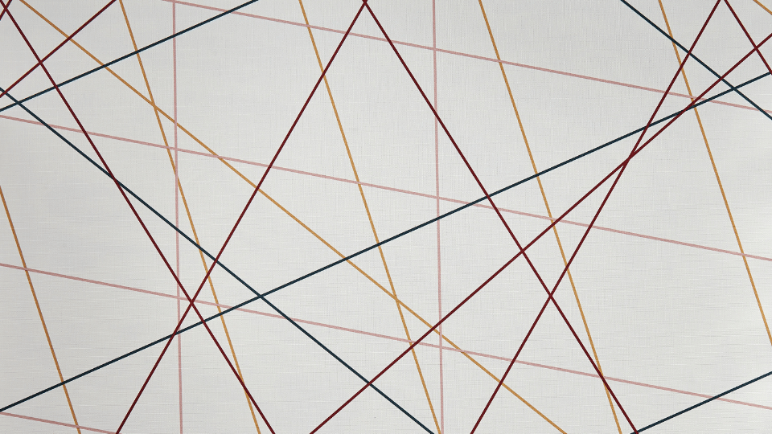

Incidence geometry is one of the most important branches of mathematics. It deals with the properties and relationships between points and lines. We’ll will take a closer look at the different aspects of incidence geometry and see what readers can expect to learn from it.
First, we study the three Incidence Axioms as laid out by David Hilbert in his infamous work Foundations of Geometry. We prove several elementary statements using these incidence axioms. Then we discuss the possibility of adding an additional axiom to the system: a parallel postulate. To motivate the discussion, we work through a few finite models of incidence axioms, as we demonstrate the independence of the proposed parallel postulates. Next, we define the Affine Plane: basically the Incidence Axioms plus a parallel postulate. Then we explore the basics of finite affine planes and end with the major open problem in finite geometry.
0.1 What do we need for the foundations of geometry?
Incidence geometry is based on the relationships between points and lines. The incidence axioms are a set of principles that govern these objects and their relationship.
The first incidence axiom states that any two points can be connected by a unique line. The second incidence axiom states that any two lines intersect at a unique point. The third incidence axiom states that there exist three non-collinear points. These three incidence axioms are the foundation for all of the incidence geometry.
One might think that all we need for geometry is a straightedge and compass, but incidence geometry shows us that this isn’t the case. In incidence geometry, we don’t use any measurements; instead, we only look at how objects are related to one another. This means that we can explore geometry without worrying about numbers or angles. So, what do we need for the foundations of incidence geometry? Simply a few basic concepts: points, lines, and an incidence relation. With these concepts in hand, we can begin to investigate the fascinating world of geometry.
0.2 What do we need to do geometry?
The short answer is The Axiomatic Method. But let’s give a few details but what we mean by this.
The Axiomatic Method
An axiomatic system must contain a set of technical terms that are deliberately chosen as undefined terms and are subject to the interpretation of the reader. All other technical terms of the system are defined terms whose definition rely upon the undefined terms. The axioms of the system are a set of statements dealing with the defined and undefined terms and will remain unproven. The word postulate is a synonym and is often used in place of the word axiom.
All other statements must be logical consequences of the axioms. These derived statements are called the theorems of the axiomatic system.
Thus, in order to follow the axiomatic method, and do any type of mathematics, we require the following:
- Mutual understanding of the meaning of the words and symbols used in the discourse.
- Acceptance of certain statements called axioms or postulates without further justification.
- Agreement on how and when one statement ``follows logically” from another, i.e., agreement on certain rules of logic.
Here is more information about what I mean by this:
- No unstated assumptions may be used in a proof.
- The following are the six types of justifications allowed for statements in proofs:
- By hypothesis
- By axiom
- By theorem
- By definition
- By step
- By rule of logic
- To prove a statement \(P\implies Q\) assume the negation of statement \(Q\) (RAA hypothesis) and deduce an absurd statement, using the hypothesis \(P\) if needed in your deduction.
- The statement \(\neg (\neg P)\) means the same as \(P\).
- The statement \(\neg (P\implies Q)\) means the same as \(P\land \neg Q\).
- The statement \(\neg(P\land Q)\) means the same as \(\neg P \lor \neg Q\).
- The statement \(\neg(\forall x P(x))\) means the same as \(\exists x \neg P(x)\).
- The statement \(\neg(\exists x P(x))\) means the same as \(\forall x \neg P(x)\).
- If \(P\implies Q\) and \(P\) are steps in a proof, then \(Q\) is a justifiable step.
- \((P\implies Q) \land (Q\implies R) \implies (P\implies R)\)
- \((P\land Q)\implies P\) and \((P\land Q)\implies Q\)
- \((\neg Q \implies \neg P)\Longleftrightarrow (P\implies Q)\)
- For every statement \(P\), \(P\lor \neg P\) is a valid step in a proof.
- Suppose the disjunction of statements \(P_1\) or \(P_2\) or \(\ldots\) or \(P_n\) is already a valid step in a proof. Suppose that proofs of \(Q\) are carried out from each of the case assumptions \(P_1\), \(P_2\), \(\ldots\), \(P_n.\) Then \(Q\) can be concluded as a valid step in the proof (proof by cases).
- \(\forall X \, (X=X)\)
- \(\forall X \, \forall Y \, (X=Y \Longleftrightarrow Y=X)\)
- \(\forall X \, \forall Y \, \forall Z \, ( (X=Y) \land (Y=Z) ) \implies (X=Z)\)
- If \(X=Y\) and \(P(X)\) is a statement about \(X\), then \(P(X)=P(Y)\).
0.3 Properties of an Axiomatic System
Axiomatic systems have properties the most essential of which is consistency. An axiomatic system is consistent provided any theorem which can be proven using the system can never logically contradict any of the axioms or previously proved theorems. An individual axiom is independent if it cannot be proven by use of the other axioms. An axiomatic system is independent provided each of its axioms is independent. An axiom set must also be complete. We must have enough axioms that every theorem that can possibly be stated using the terms and axioms of the system can be proven either true or false.
0.4 Incidence Planes
There are many expressions used to describe incidence (for example, a line passes through a point, a point lies on a line, or two lines intersect at a point. However, the term incidence is preferred because it does not have the additional connotations that these other terms have.
Axioms and Definitions
Let point, line, and incidence be undefined terms. Collectively the following three axioms are called the Incidence Axioms.
Definition 1 An incidence plane consists of a set of points, and a set of lines, satisfying the axioms:
- (A1) For every two distinct points \(A\) and \(B\) there exists a unique line \(l\) incident with \(A\) and \(B\), and is denoted by \(l(A,B)\), or sometimes by \(\overleftrightarrow{AB}\).
- (A2) For every line \(l\) there exist at least two distinct points incident with \(l\).
- (A3) There exist three distinct points with the property that no line is incident with all three of them.
Definition 2 Three or more points (lines) are called collinear (concurrent) if there exists a line (point) incident with all of them.
We use the terms noncollinear and nonconcurrent to mean not collinear and not concurrent, respectively. Lines \(l\) and \(m\) are called equal, denoted by \(l=m\), if every point incident with \(l\) is also incident with \(m\), and conversely.
Definition 3 Lines \(l\) and \(m\) are called parallel, denoted by \(l\parallel m\), whenever \(l\neq m\) and they have no points in common.
Here are some examples using logic rules. In the following, we denote \(P \vert l\) to mean point \(P\) is incidence with line \(l\).
(A1) For every point \(P\) and for every point \(Q\) not equal to \(P\), there exists a unique line \(l\) incident with \(P\) and \(Q.\)
\[\forall P\, \forall Q\, ((P\neq Q)\implies \exists ! \, l (P|l \land Q| l))\]
The negation is:
\[\exists P \, \exists Q\, \left[ P\neq Q \land ( (\exists l \, \exists m \, (l\neq m \land P|l \land Q|l)) \lor (\neg \, \exists l \, (P|l \land Q|l) ) ) \right]\]
(A2) For every line \(l\), there exists at least two distinct points incident with \(l\).
\[\forall l\, \exists P \, \exists Q \, (P\neq Q \land (P|l \land Q|l))\]
The negation is:
\[\forall l\, \exists P \, \exists Q \, (P=Q \lor ( \neg P|l \lor \neg Q|l))\]
(A3) There exist three distinct points with the property that no line is incident with all three of them.
\[\exists P\, \exists Q\, \exists R\, (P\neq Q \land P\neq R \land Q\neq R) \land \neg \, \exists l\, (P|l \land Q|l \land R|l)\]
The negation is:
\[\forall P\, \forall Q\, \forall R\, (P=Q \lor P= R \lor Q = R) \lor \exists l\, (P|l \land Q|l \land R|l)\]
Theorem 1 If two distinct lines are not parallel, then they have a unique point in common.
| Step | Statement | Justification |
|---|---|---|
| 1 | \(l \neq m\) | hypothesis |
| 2 | \(l\) and \(m\) are not \(\parallel\) | hypothesis |
| 3 | there exists a point \(P\) that lies on \(l\) and \(m\) | negation of \(parallel\) |
| 4 | there exists a point \(Q\) incident with \(l\) and \(m\) with \(Q\neq P\) | RAA hypothesis |
| 5 | \(l = m\) | (A1) |
| 6 | \(\Leftrightarrow\) | Steps (1) and (5) |
| 7 | \(P\) is unique | RAA conclusion |
Theorem 2 There exist three distinct lines that are nonconcurrent.
| Step | Statement | Justification |
|---|---|---|
| 1 | \(A,\) \(B,\) and \(C\) are distinct noncollinear points | Axiom 3 |
| 2 | there exists a line \(l(AB)\) incident with \(A\) and \(B\) | Axiom 1 |
| 3 | there exists a line \(l(BC)\) incident with \(B\) and \(C\) | Axiom 1 |
| 4 | there exists a line \(l(AC)\) incident with \(A\) and \(C\) | Axiom 1 |
| 5 | \(l(AB)=l(BC)\) | RAA Hypothesis |
| 6 | \(A,\) \(B,\) and \(C\) are collinear | Steps 2, 3, 5 |
| 7 | \(\rightarrow \leftarrow\) | Steps 1, 6 |
| 8 | \(l(AB)\neq l(BC)\) | RAA Conclusion |
| 9 | \(l(AB)=l(AC)\) | RAA Hypothesis |
| 10 | \(A,\) \(B,\) and \(C\) are collinear | Steps 2, 4, 9 |
| 11 | \[\rightarrow \leftarrow\] | Steps 1, 10 |
| 12 | \(l(AB)\neq l(AC)\) | RAA Conclusion |
| 13 | \(l(AC)=l(BC)\) | RAA Hypothesis |
| 14 | \(A,\) \(B,\) and \(C\) are collinear | Steps 3, 4, 13 |
| 15 | \[\rightarrow \leftarrow\] | Steps 1, 14 |
| 16 | \(l(AC)\neq l(BC)\) | RAA Conclusion |
| 17 | lines \(l(AB),\) \(l(BC),\) \(l(AC)\) are three distinct lines | Steps 8, 12, 16 |
| 18 | there exists a point \(X\) incident with all three lines \(l(AB),\) \(l(BC),\) \(l(AC)\) | RAA Hypothesis |
| 19 | one and only one must hold: \(X=A\) or \(X\neq A\) | Law of Excluded Middle |
| 20 | \(X=A\) | Case 1 |
| 21 | \(A\) is incident with all three lines \(l(AB),\) \(l(BC),\) \(l(AC)\) | Steps 18, 20 |
| 22 | \(A,\) \(B,\) \(C\) are collinear | Definition of Collinear |
| 23 | \(\rightarrow \leftarrow\) | Steps 1, 22 |
| 24 | \(X\neq A\) | Case 2 |
| 25 | lines \(l(AB)\) and \(l(AC)\) are not parallel | Definition of Parallel Lines |
| 26 | \(X=A\) | Theorem 1 |
| 27 | \(\rightarrow \leftarrow\) | Steps 24, 26 |
| 28 | there does not exist a point \(X\) incident with all three lines \(l(AB),\) \(l(BC),\) \(l(AC)\) | RAA Conclusion |
| 29 | lines \(l(AB),\) \(l(BC),\) \(l(AC)\) are nonconcurrent | Definition of nonconcurrent |
Theorem 3 For every point \(A,\) there is at least one line not passing through \(A.\)
| Step | Statement | Justification |
|---|---|---|
| 1 | \(A\) is a point | Hypothesis |
| 2 | every line passes through \(A\) | RAA Hypothesis |
| 3 | there exists 3 noncollinear points \(E,\) \(D,\) \(F\) | Axiom 3 |
| 4 | there exists a line \(l(ED)\) incident with \(E\) and \(D\) | Axiom 1 |
| 5 | there exists a line \(l(DF)\) incident with \(D\) and \(F\) | Axiom 1 |
| 6 | one and only one must hold: \(A=D\) or \(A\neq D\) | Law of Excluded Middle |
| 7 | \(A\neq D\) | Case 1 |
| 8 | \(A\) and \(D\) are incident with \(l(ED)\) and \(l(DF)\) | Steps 2, 4, 5 |
| 9 | \(l(ED)\)= \(l(DF)\) | Axiom 1 |
| 10 | \(F\) is incident with \(l(ED)\) | Definition of Equal Lines |
| 11 | \(E,\) \(D,\) and \(F\) are collinear | Definition of collinear |
| 12 | \(\rightarrow \leftarrow\) | Steps 3 and 11 |
| 13 | \(A=D\) | Case 2 |
| 14 | every line is incident with \(D\) | Steps 2, 13 |
| 15 | there exists a line \(l(EF)\) incident with \(E\) and \(F\) | Axiom 1 |
| 16 | \(D\) is incident with \(l(EF)\) | Axiom 1 |
| 17 | \(E,\) \(D,\) and \(F\) are collinear | Definition of Collinear |
| 18 | \(\rightarrow \leftarrow\) | Steps 3, 17 |
| 19 | there exists a line not incident with \(A\) | RAA conclusion |
0.5 Basic Theorems
Some of the theorems below have a column proof in the appendix. For the theorems that do not have a column proof the reader is urge to provide one.
Theorem 4 If two distinct lines are not parallel, then they have a unique point in common.
Proof. Suppose \(l\) and \(m\) are distinct lines. Since \(l\) and \(m\) are not parallel, there exists a point incidence with both of them, say \(P.\) Let \(Q\) be a point incident with both of them. Assume \(P\neq Q.\) By axiom (A1), it follows that \(l=m,\) contrary to hypothesis. Hence, \(P=Q\) and so \(P\) is unique. \(\square\)
Theorem 5 There exist three distinct lines that are nonconcurrent.
Proof. By Axiom 3, there exists three distinct noncolinear points, say \(A, B, C.\) By Axiom 1, we have lines \(l(AB),\) \(l(BC),\) and \(l(AC).\) If any one of these lines is equal to another, then all three points are collinear. Hence, these three lines are distinct. Assume for a contradiction that there exists a point \(X\) incident with all three lines. If \(X,\) then \(A, B, C\) are collinear contrary to hypothesis. If \(X\neq A,\) then distinct lines \(l(AB)\) and \(l(AC)\) do not have a unique point in common, contrary to Theorem 1. Hence, \(X\) does not exists. Therefore, the lines \(l(AB),\) \(l(BC),\) and \(l(AC)\) are nonconcurrent. \(\square\)
Theorem 6 Every point is incident with at least one line.
Proof. Suppose that \(P\) is a point that no line is incidence with. By (A3), there exists three distinct noncolinear points, say \(A, B, C.\) Without loss of generality, say \(P\neq A,\) and so by (A1) we see that there exists a line incident with \(P,\) contrary to hypothesis. \(\square\)
Theorem 7 Every line has at least one point not incident with it.
Proof. Suppose there exists a line, say \(l,\) that is incident with every point. By (A3), there exists three distinct noncolinear points, say \(A, B, C,\) contrary to hypothesis. \(\square\)
Theorem 8 Every point has at least one line not incident with it.
Proof. Assume for a contradiction that \(A\) is a point that every line is incident with. By (A3), there exists three distinct noncolinear points, say \(E, D, F.\) By (A1), we then see that \(A\) is incident with the three lines \(l(ED),\) \(l(DF),\) and \(l(EF).\) If \(A=D,\) then \(E, D, F\) are incident with line \(l(EF).\) If \(A\neq D,\) then \(l(ED)=l(DF)=l(AD)\) by (A1). Hence, \(E, D, F\) are incident with line \(l(AD).\) This contradiction shows that there exists a line that is not incident with \(A.\) \(\square\)
Theorem 9 Every point is incident with at least two distinct lines.
Proof. Let \(P\) be a point. By Axiom 3, there exists three distinct noncolinear points, say \(A, B, C.\) Since \(A, B, C\) are noncollinear, it follows that \(l(AB),\) \(l(AC),\) and \(l(BC)\) are three distinct lines. Suppose that \(P\) is one of these points, \(A,\) \(B,\) or \(C.\) Without loss of generality, say \(A.\) By (A1), it follows that \(l(AB)\) and \(l(AC)\) are two distinct lines that are incident with \(P.\) Suppose that \(P,\) \(A, B, C\) are four distinct points. By (A1), there exists lines \(l(AP)\) incident with \(A\) and \(P,\) \(l(BP)\) incident with \(B\) and \(P,\) and there exists \(l(CP)\) incident with \(C\) and \(P.\) If \(l(AP)=l(BP)=l(CP),\) then \(A, B, C\) are collinear. Hence, there are at least two lines passing through \(P.\) \(\square\)
Theorem 10 If \(C\) is incident with \(l(AB)\) and distinct from \(A\) and \(B,\) then \(l(CA)=l(BC)=l(AB).\)
Proof. By (A1), it follows \(l(CA)=l(AB)\) since \(C\) and \(A\) are distinct and incident with \(l(AB).\) By (A1), it follows \(l(BC)=l(AB)\) since \(C\) and \(B\) are distinct and incident with \(l(AB).\) Hence \(l(CA)=l(BC)=l(AB).\) \(\square\)
Theorem 11 If \(l(AB)=l(AC)\) and \(B\) and \(C\) are distinct, then \(l(AB)=l(BC).\)
Proof. By (A1), it follows \(l(AB)=l(BC)\) since \(C\) and \(B\) are distinct and incident with \(l(AB).\) \(\square\)
Theorem 12 If \(l\) is any line, then there exists lines \(m\) and \(n\) such that \(l,\) \(m,\) and \(n\) are distinct and both \(m\) and \(n\) have a point in common with \(l.\)
Proof. Suppose that \(l\) is a line. By Theorem 4 , there exists a point \(P\) not incident with \(l.\) By (A2), there exists points \(A\) and \(B\) both incident with \(l.\) Then \(A\neq P\) and \(B\neq P,\) since \(A\) and \(B\) are incident with \(l\) and \(P\) is not incident with \(l.\) By (A1), there exists lines \(m:=l(AP)\) and \(n:=l(BP)\) and both of these lines have a point in common with \(l.\) Clearly, \(l,\) \(m,\) and \(n\) are distinct lines.\(\square\)
Theorem 13 If \(A\) is any point, then there exist points \(B\) and \(C\) such that \(A,\) \(B,\) and \(C\) are noncollinear.
Proof. Let \(A\) be a point. By Theorem 5 , there exists a line not incident with \(A,\) call it \(l.\) By (A2), there exists two distinct points \(B\) and \(C\) incident with line \(l.\) Assume for a contradiction that \(A,\) \(B,\) and \(C\) are collinear to line \(m.\) By (A1), \(m=l\) and so \(A\) is incident with \(l.\) This contradiction show that \(A,\) \(B,\) and \(C\) can not be collinear. \(\square\)
Theorem 14 If \(A\) and \(B\) are two distinct points, then there exists a point \(C\) such that \(A,\) \(B,\) and \(C\) are noncollinear.
Proof. Let \(A\) and \(B\) be two distinct points. By (A1), there exists line \(l=l(AB),\) and by Theorem 4 there exists a points \(C\) not incident with \(l.\) Assume for a contradiction that \(A,\) \(B,\) and \(C\) are collinear to line \(m.\) By (A1), \(m=l\) and so \(C\) is incident with \(l,\) contrary to hypothesis. This contradiction show that \(A,\) \(B,\) and \(C\) can not be collinear. \(\square\)
0.6 Parallelism
Consider the following statement:
In a plane, given a line and a point not on it, at most one line parallel to the given line can be drawn through the point.
This statement is historical called Playfair’s axiom (named after the Scottish mathematician John Playfair) and is an axiom that can be used instead of the fifth postulate of Euclid (the Parallel postulate) when working with Euclidean geometry.
In David Hilbert’s book, Foundations of Geometry (1899), he provided a new set of axioms for Euclidean geometry using Playfair’s axiom instead of Euclid’s version.
Here are three additional statements we will consider. These are not new axioms for incidence geometry. Rather they are additional statements that may or may not be satisfied by a particular model for incidence geometry.
- (Elliptic Parallel Property) For any line \(l\) and any point \(P\) not incident with \(l,\) there exist no lines incident with \(P\) that are parallel to \(l.\)
- (Euclidean Parallel Property) For any line \(l\) and any point \(P\) not incident with \(l,\) there exists exactly one line incident with \(P\) that is parallel to \(l.\)
- (Hyperbolic Parallel Property) For any line \(l\) and any point \(P\) not incident with \(l,\) there exists more than one line incident with \(P\) parallel to \(l.\)
Can any of these three statements be proven from the Incidence Axioms? If not, how would one show that and which one should we take as an additional axiom?
Before we answer such questions let’s consider three basic properties of parallelism, namely the reflexive, symmetric, and transitive properties.
Definition 4 Let \(l\sim m\) mean “line \(l\) is parallel to line \(m\) or equal to \(m\)”.
Proposition 1 Parallelism is reflexive and symmetric. More precisely, the following hold:
- (reflexive) if \(l\) is a line, then \(l \parallel l\); and
- (symmetric) if \(l\) and \(m\) are lines, then \(l \parallel m\) implies \(m \parallel l.\)
Proposition 2 (Parallelism is Transitive) If the Euclidean Parallel Property holds, then \(\sim\) is an equivalence relation.
Proof. Assume that the Euclidean Parallel Property holds. Suppose \(l\sim m\) and \(m\sim n.\) Also suppose that \(l\sim n\) does not hold. Since \(\neg(l\sim n),\) we have \(l\neq n\) and by Theorem 1, there exists a point \(P\) incident with lines \(l\) and \(n.\) Notice that \(l=m\) and \(m=n\) can not happen since \(l\neq n.\) Suppose that \(l=m\) and \(m \parallel n.\) Then \(P\) lies on \(n, l,\) and \(m\) which can not occur because \(m \parallel n.\) Similarly, \(m=n\) and \(l \parallel m\) can not occur. The remaining case, of \(l \parallel m\) and \(m \parallel n\) can not occur either since the Euclidean Parallel Property holds. All cases considered, it follows that if \(l\sim m\) and \(m\sim n,\) then \(l\sim n\) must hold. Therefore, \(\sim\) is reflexive, symmetric, and transitive as needed.\(\square\)
We will now see that none of these parallel properties can be proven from the Incidence Axioms. Moreover, you might have noticed that, at most one of them can hold at any given time.
1 Models of Finite Incidence Planes
Any collection of points and lines which satisfies the Incident Axioms (A1), (A2), (A3) is called an incidence geometry. In this section we give several concrete examples (models) of incidence geometry.
1.1 Three-Point Geometry
In Three-Point Geometry, we interpret a point to be one of the symbols \(A,\) \(B,\) or \(C\) and a line to consist of exactly two points. Explicitly,
| \(l_1\) | \(l_2\) | \(l_3\) |
|---|---|---|
| \(A\) | \(A\) | \(B\) |
| \(B\) | \(C\) | \(C\) |
Notice the following hold: - Each point is incident with two lines. - There are no parallel lines, and so the Elliptic Parallel Property holds. \(\square\)
Any collection of points and lines which satisfies the Incident Axioms is called an incidence geometry.
Is incidence geometry consistent? To answer this question, let’s hypothesize that incidence geometry is inconsistent. Then the statement:
if points \(A\) and \(B\) are distinct, then \(A\) and \(B\) are the same point
could be proven. If such a proof existed in incidence geometry then it would hold in any model of it. In particular, a proof of such a statement would hold in Three-Point Geometry. However, this is impossible since there are exactly three distinct points. Therefore, we can conclude, that incidence geometry is consistent. This is an example of how a model can serve as evidence of the consistency of an axiomatic system.
1.2 Four-Point Geometry
In Four-Point Geometry, we interpret the symbols \(A,\) \(B,\) \(C,\) and \(D\) to be points and there are precisely six lines each of which consists of only two distinct points as follows.
| \(l_1\) | \(l_2\) | \(l_3\) | \(l_4\) | \(l_5\) | \(l_6\) |
|---|---|---|---|---|---|
| \(A\) | \(A\) | \(A\) | \(B\) | \(B\) | \(C\) |
| \(B\) | \(C\) | \(D\) | \(C\) | \(D\) | \(D\) |
Notice the following hold: - Each point is incident with three lines. - Each distinct line has exactly one line parallel to it and so the Euclidean Parallel Property holds. \(\square\)
1.3 Five-Point Geometry
In Five-Point Geometry, we interpret the symbols \(A,\) \(B,\) \(C,\) \(D,\) and \(E\) to be points and there are precisely ten lines each of which consists of only two distinct points as follows.
| \(l_1\) | \(l_2\) | \(l_3\) | \(l_4\) | \(l_5\) | \(l_6\) | \(l_7\) | \(l_8\) | \(l_9\) | \(l_{10}\) |
|---|---|---|---|---|---|---|---|---|---|
| \(A\) | \(B\) | \(C\) | \(D\) | \(A\) | \(B\) | \(B\) | \(A\) | \(C\) | \(A\) |
| \(B\) | \(C\) | \(D\) | \(E\) | \(C\) | \(D\) | \(E\) | \(D\) | \(E\) | \(E\) |
Notice the following hold: - Each line is incident with exactly two points. - Each point is incident with four lines. - Each distinct line has exactly three lines parallel to it. - The Hyperbolic Parallel Property holds. \(\square\)
Remark. Notice that, in Three-Point Geometry the Elliptic Parallel Property is true, in Four-Point Geometry the Euclidean Parallel Property is true, and in Five-Point Geometry the Hyperbolic Parallel Property is true. Thus Three-Point, Four Point, and Five-Point geometries reveal that the three Parallel Properties are all independent from the Incidence Axioms.
1.4 Fano’s Geometry
The Italian mathematician Gino Fano developed the first finite geometry. He produced a finite three dimensional space with 15 points, 35 lines and 15 planes, in which each line had only three points on it. He did this while working on proving the independence of his set of axioms for his \(n\)-dimensional geometry. The planes in this space (now known as Fano planes) consist of seven points and seven lines.
Example 1 The following interpretation, called Fano’s Geometry, is a model for incidence geometry. Each point is one of the seven symbols \(A,\) \(B,\) \(C,\) \(D,\) \(E,\) \(F\) or \(G\) and a point \(P\) is incident with a line \(l\) means \(l\) consists only of the point \(P\) and two other distinct points. There are exactly seven lines where each line consists of exactly three points and shown.
| \(l_1\) | \(l_2\) | \(l_3\) | \(l_4\) | \(l_5\) | \(l_6\) | \(l_7\) |
|---|---|---|---|---|---|---|
| A | A | A | B | C | C | E |
| B | G | E | G | G | F | B |
| C | F | D | D | E | D | F |
The following statements are true in Fano’s geometry: - the Elliptic Parallel Property holds, - each point is incident with exactly three lines, and - for every two distinct points there are exactly two lines that are not incident with these points. \(\square\)
1.5 Young’s Geometry
The following interpretation, called Young’s Geometry, is a model for incidence geometry. Each point is one of the nine symbols \(A,\) \(B,\) \(C,\) \(D,\) \(E,\) \(F,\) \(G,\) \(H,\) \(I\) and a point \(P\) is incident with a line \(l\) means \(l\) consists only of the point \(P\) and two other distinct points. There are exactly twelve lines where each line consists of exactly three points and shown.
| \(l_1\) | \(l_2\) | \(l_3\) | \(l_4\) | \(l_5\) | \(l_6\) | \(l_7\) | \(l_8\) | \(l_9\) | \(l_{10}\) | \(l_{11}\) |
|---|---|---|---|---|---|---|---|---|---|---|
| \(A\) | \(A\) | \(A\) | \(A\) | \(B\) | \(B\) | \(B\) | \(C\) | \(C\) | \(C\) | \(D\) |
| \(B\) | \(D\) | \(E\) | \(F\) | \(D\) | \(E\) | \(F\) | \(D\) | \(E\) | \(F\) | \(E\) |
| \(C\) | \(G\) | \(H\) | \(I\) | \(H\) | \(I\) | \(G\) | \(I\) | \(G\) | \(H\) | \(F\) |
The following statements are true in Young’s geometry: - each point is incident with exactly four lines, - for every two distinct points there are exactly five lines that are not incident with these points, and - the Euclidean Parallel Property holds. \(\square\)
1.6 Hand-Shake Geometry
Definition 5 A hand-shake plane is an incidence plane for which every line has exactly two points.
In the three examples above we see that a three (four, five) point hand-shake geometry satisfies the Elliptic (Euclidean, Hyperbolic) Parallel Property.
Proposition 3 A hand-shake plane with more than five points satisfies the Hyperbolic Parallel Property.
Proof. Suppose that \(l\) is a line and \(P\) is a point not incident with \(l.\) Then there exists points \(A\) and \(B\) on line \(l\) that are not \(P,\) say \(l=\{A,B\}.\) Further, since there are least five points, there exists points \(Q\) and \(R\) that are not \(A,\) \(B,\) nor \(P.\) Then lines \(m=\{P,Q\}\) and \(n=\{P,R\}\) are lines parallel to \(l\) that are incident with \(P.\) \(\square\)
Theorem 15 In a hand-shank plane with \(n\) points, there are exactly \(\frac{(n-1)n}{2}\) lines.
Proof. The hand-shake incidence geometry with \(n\) points has
\[1+2+\cdots + (n-2)+(n-1)= \frac{(n-1)n}{2}.\]
To see this we notice that we can connect the first point to the other \((n-1)\) points. Disregarding this point, we connect the second point to \((n-2)\) different points, and so on. The last line to be considered is between the \((n-1)\)-th and the \(n\)-th point \(\square\)
1.7 Straight-Fan Geometry
Definition 6 A straight-fan plane is an incidence plane will all but one point incident with exactly one line.
Definition 7 Four distinct points, no three of which are incident, are said to be a quadrangle. Four distinct lines, no three of which are incident with a point, are said to be a quadrilateral.
Theorem 16 An incident plane that satisfies the Elliptic Parallel Property is either a straight-fan plane or a quadrangle exists.
Proof. We assume the Elliptic Parallel Property holds, but no quadrangle exists. Notice that the three-point incidence geometry is a straight-fan. We now assume at least four points exist, and so take any four points of the given incidence plane. Since no quadrangle exists, we can assume that the three points \(A,\) \(B,\) \(C\) are incident with line \(l.\) By Theorem 4, there exists a point \(P\) not on the line \(l.\)
Assume towards a contradiction that two distinct points \(Q\) both are not incident with \(l.\) The lines \(l(PQ)\) and \(l\) are incident, either in one of the three points \(A,\) \(B,\) \(C,\) or still another point. WLOG assume the intersection point \(A'\) is different from both \(B\) and \(C.\) Because no quadrangle exists, of the four points \(B,\) \(C,\) \(P,\) \(Q\) at least three are incident with a line. This could be points \(P,\) \(Q,\) \(B\) or \(P,\) \(Q,\) \(C.\) Both cases are impossible, since the lines \(l(PQ)\) and \(l =l(BC)\) are incident only in point \(A'\) which is not \(B\) nor \(C.\) Therefore, there exists exactly one point \(P\) not incident with line \(l,\) as desired. \(\square\)
Theorem 17 Every straight-fan plane satisfies the Elliptic Parallel Property.
Proof. In a straight-fan plane, all points except one are incident with one line, call it line \(l.\) Clearly, every line must be incident with this line, and so there are no parallel lines. It then follows that the Elliptic Parallel Property must hold. \(\square\)
Theorem 18 In a straight-fan plane with \(n\) points, there are exactly \(n\) lines.
Proof. Notice there is one line \(l\) with \(n-1\) points, and only one point \(P\) not incident with \(l.\) There are \(n-1\) lines with two points each of which connects \(P\) to a different point on the line \(l.\) \(\square\)
2 Introduction to Affine Planes
Leonhard Euler, in 1748, introduced the term affine in his (extremely) influential book Introductio in analysin infinitorum (volume 2, chapter XVIII).
2.1 Definitions and Propositions
We will now switch out Incidence Axiom (A2) and replace it with the Euclidean Parallel Property. By the way, sometimes this statement is called Playfair’s Axiom, hence the abbreviation (PA).
Definition 8 An affine plane consists of a set of points, and a set of lines, satisfying the axioms:
- (A1) Every two distinct points are incident with a unique line.
- (PA) (Euclidean Parallel Property) If a point \(P\) is not incident with a line \(l,\) there exists exactly one line \(m\) incident with \(P\) that is parallel to \(l.\)
- (A3) There exists three distinct points that are not incident with the same line.
Surprise! In an affine plane, we get the Incidence Axiom (A2) back (for free).
Proposition 4 (Affine Plane) In an affine plane, the Euclidean Parallel Property and the Incidence Axioms hold.
Proof. It remains to prove (A2) that there are at least two distinct points on every line. To do so, suppose that \(l\) is a line. By (A3) there exists three distinct points \(A,\) \(B,\) and \(C\) that are not incident with the same line. By (A1), there exists lines \(l(AB),\) \(l(AC),\) and \(l(BC).\) If \(l\) is one of these lines, then \(l\) is incident with two distinct points. Hence we assume that \(l\) is not any of these lines. If \(l\) is incident with any two of these three points, then we are finished.
Case 1: Assume that \(l\) is incident with at most one of these points, say point \(A.\) Since \(A,\) \(B,\) \(C\) are noncollinear, \(B\) is not incident with \(l(AC).\) By (PA) there exists unique line \(m\) incident with \(B\) that is parallel to \(l(AC).\) Case 1.1: Suppose \(l \parallel m\) and \(l \parallel l(BC).\) Since both \(m\) and \(l(BC)\) pass through \(B\) and are parallel to \(l,\) (PA) yields \(m=l(BC).\) So that \(C\) lies on \(m.\) However, \(m \parallel l(AC)\) shows that this case can not happen. Case 1.2: Suppose \(l\not\parallel m.\) So \(l\) and \(m\) have a point in common, say \(D.\) If \(A=D,\) then by (A1), \(m=l(AB).\) However, since \(m \parallel l(AC)\) we can not have \(m=l(AB).\) Thus \(A\neq D,\) and so \(l\) has two distinct points on it. Case 1.3: Suppose \(l\not\parallel l(BC).\) So \(l\) and \(l(BC)\) have a point in common, say \(D.\) Notice that if \(A=D,\) then \(A, B, C\) are collinear to \(l(BC).\) Thus \(A\neq D,\) and so \(l\) has two distinct points on it. We conclude case 1 with: line \(l\) has two distinct points on it. (See \(\eqref{fig:twopoints}\))
Case 2: Assume that \(A,\) \(B,\) and \(C\) are not incident with \(l.\) Case 2.1: Suppose that \(l \parallel l(BC).\) If \(l allell(AB),\) then \(l(BC)=l(AB)\) by (P4). However, this case can not happen because \(A,\) \(B,\) and \(C\) are noncollinear. Hence \(l(AB)\) and \(l\) are incident with a point, say \(P.\) If \(l allell(AC),\) then \(l(BC)\) and \(l(AC)\) by (P4). However, this case can not happen because \(A,\) \(B,\) and \(C\) are noncollinear. Hence \(l(AC)\) and \(l\) are incident with a point, say \(Q.\) Notice that \(P\neq A\) and \(Q\neq A\) since \(P, Q\) are incident with \(l\) and \(A\) is not. Hence, if \(P=Q,\) then \(l(AC)=l(AB)\) contrary to the assumption that \(A,\) \(B,\) and \(C\) are noncollinear. Whence \(l\) is incident with distinct points \(P\) and \(Q.\) The case 2.2 for \(l \parallel l(AC)\) and case 2.3 for \(l \parallel l(AB)\) are entirely similar. Case 2.4: Now suppose that \(l\) is not parallel to any of these lines. Then \(l(AB)\) and \(l\) are incident at \(P\) and \(l(AC)\) are incident at \(Q.\) As we found above \(P\neq Q,\) and so again \(l\) is incident with distinct points \(P\) and \(Q.\) \(\square\)
Remark. By Affine Plane, it follows that Theorem 1 through Theorem 11 are theorems in any affine plane.
Proposition 5 In an affine plane, if a line is incident with, and distinct from, one of two distinct parallel lines, then it is also incident with the other.
Proof. Let \(l, m\) and \(n\) be three distinct lines. Assume that \(l \parallel m\) and line \(n\) is incident with \(m.\) By Theorem 1, there is only one point \(P\) incident with both \(n\) and \(m.\) If \(l \parallel n,\) then \(n=m\) by (P4). Hence \(l\not \parallel n\) and so \(n\) must meet line \(l.\) \(\square\)
Proposition 6 In an affine plane, parallelism is an equivalence relation.
Proof. By Parallelism is Transitive and \(\eqref{twodispointaff}\).\(\square\)
Definition 9 A pencil is a set consisting of a line, together with all lines parallel to it, that is, an equivalence class of parallel lines under parallelism.
Proposition 7 In an affine plane, there are at least three pencils of parallel lines.
Proof. There exists three noncollinear points, say \(A,\) \(B,\) and \(C.\) As in Theorem 2 , \(l(AB),\) \(l(AC),\) and \(l(BC)\) are three distinct nonconcurrent lines. By (PA), any line \(l\) parallel to \(l(AB)\) must intersect \(l(AC),\) and \(l(BC)\) because \(A,\) \(B,\) and \(C\) are noncollinear. Hence \(l\) is only in the pencil corresponding to \(l(AB).\) Similarly for the other cases. Therefore, there are at least three distinct pencils of parallel lines. \(\square\)
Proposition 8 In an affine plane, all lines have the same cardinality.
Proof. Assume \(l\neq m\) since otherwise the result is obvious. By Theorem 1 , it follows that either \(l\) and \(m\) have a unique point \(O\) in common (case 1) or that \(l\) and \(m\) are parallel (case 2). (See \(\eqref{fig:bijection}\))
Case 1: There exists points \(A\) and \(A'\) on \(l\) and \(m,\) respectively, such that \(A\neq O\) and \(A'\neq O\); and there exists a line \(l(AA').\) Let \(X\) be a point on \(l\) different from \(A\) and \(O.\) There exists a unique line \(k\) through \(X\) and parallel to \(l(AA').\) Suppose that \(k \parallel m.\) Then by (P4), \(m=l(AA')\) since both lines \(m\) and \(l(AA')\) pass through \(A'\) and are parallel to \(k.\) Hence \(k \parallel m\) can not happen. By Theorem 1, it follows that \(k\) intersects \(m\) at a unique point, which we will call \(X'.\) Thus it is easy to see that the function \(f:l\to m\) prescribed by \(f(O)=O,\) \(f(A)=A',\) and \(f(X)=X'\) is well-defined.
To show \(f\) is a surjective assume point \(C\) lies on \(m.\) If \(C=O\) or \(C=A',\) then \(f(O)=C\) or \(f(A)=C\) as needed, respectively. Assume \(C\) is distinct from \(O\) and \(A'.\) By (P4), there exists a line \(k'\) passing through \(C\) and parallel to \(l(AA').\) Suppose that \(k' \parallel l.\) Then \(l\) and \(l(AA')\) pass through \(A\) and are parallel to \(k'\) so by (P4), \(l=l(AA'),\) which can not happen. Hence it follows that \(k'\) can not be parallel to \(l,\) and so \(k'\) intersects \(l\) at a single point \(C'.\) Then it follows \(f(C')=C,\) and so \(f\) is surjective.
Now assume there exists points \(B\) and \(C\) on \(l\) such that \(f(B)=f(C)=D.\) Since both \(l(BB')\) and \(l(CC')\) are parallel to \(l(AA')\) and both contain \(D,\) we have \(l(BB')=l(CC'):=k''\) by (P4). By Theorem 1, \(k''\) and \(l\) have a unique point in common, so \(B=C\) as needed.
Therefore, \(f\) is one-to-one.
Case 2: Assume \(l \parallel m.\) Let \(O\) lie on \(l\) and \(O'\) lie on \(m.\) It follows that \(l\) and \(l(OO')\) are incident at \(O,\) so by case 1 there is a bijection \(f\) from \(l\) to \(l(OO').\) Similarly there is a bijection \(g\) between \(l(OO')\) and \(m.\) Therefore \(g\circ f\) is a bijection of \(l\) and \(m.\) \(\square\)
2.2 Finite Affine Planes
A finite affine plane is an affine plane with a finite number of points. A finite affine plane with \(n^2\) points is said to have order \(n.\)
Proposition 9 In a finite affine plane, there exists an integer \(n\geq 2\) such that
- the total number of points is exactly \(n^2,\)
- every point is incident with exactly \(n+1\) lines,
- every pencil contains exactly \(n\) lines,
- there are exactly \(n^2+n\) lines, and
- there are exactly \(n+1\) pencils of parallel lines.
Proof. \(\eqref{fapone}\): There is at least one line, and by \(\eqref{Bijection}\), there are \(n\) points on it, say \(l=\{A_1, \dots, A_n\}.\) There exists a point \(B\) not on \(l\) and consider \(l(A_1B)=m_1.\) For \(i=2, \ldots, ,n\) we use the Euclidean Parallel Property to define \(m_i\) to be the unique line through \(A_i\) parallel to \(m_1.\) Each of these lines \(m_1,\ldots, , m_n\) has \(n\) points, there are \(n\) of these lines, and no pair of lines has a point in common. Therefore, the number of points in \(\mathcal{P}\) is at least \(n^2.\) If \(P\) is any point in \(\mathcal{P},\) then either \(P\) is on \(m_1\) or there is a line \(k\) through \(P\) parallel to \(m_1.\) In the latter case \(k\) must intersect \(l\) at one of the points \(A_2, \ldots, A_n,\) because if not then \(l \parallel k,\) \(m_1 \parallel k,\) and both of them passes through \(A_1\) means \(l=m_1.\) Therefore, we have \(k=m_i\) for some \(i.\) Thus every point in \(\mathcal{P}\) lies on one of the lines \(m_i,\) and in fact \(\mathcal{P}\) has exactly \(n^2\) points.
\(\eqref{faptwo}\): Suppose that \(B\) is an arbitrary point, and \(l=\{A_1,\ldots, A_n\}\) is a line not containing \(B.\) By (A1) and Theorem 1, the lines \(l_i=l(BA_i)\) (for \(i=1,\ldots,n)\) and the line \(l_{n+1},\) the line through \(B\) parallel to \(l\) (by (PA)), are all distinct. Further, any line through \(B\) intersects \(l\) (and therefore is one of the \(l_i\)) or is parallel to \(l\) (and therefore is \(l_{n+1}\)). (See \(\eqref{fig:pencil}\))
\(\eqref{fapthree}\): Suppose that \(l\) is any line, \(C_1\) is a point on \(l,\) and \(C_2\) is a point not on \(l.\) Then the points of the line \(l(C_1C_2)\) can be written as \(C_1, \ldots, C_n.\) For \(i=2, \ldots, n,\) let \(l_i\) be the line through \(C_i\) parallel to \(l,\) as shown in \(\eqref{fig:pencil}\). These \(n-1\) lines are all different, since the points \(C_2, \dots, C_n\) are distinct. If \(k\) is any line parallel to \(l,\) then \(k\) must intersect \(l(C_1C_2),\) since \(l\) is the only line containing \(C_1\) which is parallel to \(k.\) Therefore \(k\cap l(C_1C_2)=C_i\) for some \(i,\) so \(k=l.\) Consequently the lines \(l_2,\ldots, l_n\) are the only lines parallel to \(l.\) (See \(\eqref{fig:pencil}\))
\(\eqref{fapfour}\): Finally, suppose that \(B\) is any point, and \(l_1,\ldots, l_{n+1}\) are the \(n+1\) lines containing \(B.\) Each of these lines is in a pencil consisting of \(n\) lines, so the lines through \(B,\) together with the lines parallel through them, account for \(n(n+1)\) distinct lines. For any line \(m,\) either \(B\) lies on \(m\) (in which case \(m\) has been counted) or there is a line containing \(B\) and parallel to \(m\) (in which case \(m\) has also been counted). Therefore there are \(n(n+1)\) lines in \(\mathcal{L}.\)
\(\eqref{fapfive}\): Since each of the \(n(n+1)\) lines is in one and only one pencil, and each pencil contains \(n\) lines, there are \(n+1\) pencils. \(\square\)
3 Introduction to Projective Planes
Now it’s our turn in investigate the Elliptic Parallel Property more.
Definitions and Propositions
Definition 10 A projective plane consists of a set of points, and a set of lines, satisfying the axioms:
- (P1) Every two distinct points (lines) are incident with a unique line (point).
- (P2) There exists four distinct points no three of which are collinear.
Proposition 10 In a projective plane, the Elliptic Parallel Property and the Incidence Axioms hold.
Proof. To prove that the Elliptic Parallel Property holds assume that \(l\) is a line and \(P\) is a point not incident with \(l.\) Suppose that \(m\) is a line parallel to \(l\) that is incident with \(P.\) If \(l=m,\) then \(P\) is on \(l\) contary to hypothesis. Hence \(l\neq m\) and then by (P1), \(l\) and \(m\) have point in common. Hence \(m\) does not exist and so the Elliptic Parallel Property holds.
By (P1) every two distinct points determines a unique line, and so (A1) holds.
By (P2) there exists four distinct points, say \(A,\) \(B,\) \(C,\) and \(D,\) no three of which are collinear. In particular, \(A,\) \(B,\) are \(C\) noncollinear, and so (A3) holds.
To prove that (A2) holds, assume that \(l\) is a line. By (P2), there exists four distinct points \(A,\) \(B,\) \(C,\) and \(D,\) no three of which are collinear. By (P1), there exists a line incident with \(A\) and \(B,\) say \(l(AB).\) By (P1), there exists a line incident with \(A\) and \(C,\) say \(l(AC).\) If \(l=l(AB)\) or \(l=l(AC),\) then \(l\) is incident with two distinct point as needed. Assume that \(\neq l(AB)\) and \(l\neq l(AC).\) By (P1), there exists points \(E, F\) incident with \(l.\) If \(E=F,\) then \(l(AB)=l(AC)\) by (P1), which can not happen. Whence \(E\neq F\) and so (A2) holds. \(\square\)
Remark. By (Proposition 10), it follows that Theorem 1 through Theorem 11 are propositions in any projective plane.
Proposition 11 In a projective plane, there exist four distinct lines no three of which are concurrent.
Proof. By (P2) there exists four distinct points, \(A,\) \(B,\) \(C,\) and \(D\) no three of which are collinear.
By (P1) there exists lines \(l(AB),\) \(l(BC),\) \(l(CD),\) and \(l(DA).\) Assume that three of them are concurrent, WLOG, say \(l(AB),\) \(l(AD),\) and \(l(CD).\) By definition of concurrent and by (P1), there exists a unique point in common to these lines, say \(E.\) Now \(A\) is incident \(l(AB),\) \(l(AD)\) and so by Theorem 1 , \(E=A.\) Similarly, \(D\) is incident \(l(AD),\) \(l(CD)\) and so by Theorem 1 , \(E=D.\) Now since \(A=D\) is contrary to hypothesis, we see that no three of these lines can be concurrent. \(\square\)
Proposition 12 In a projective plane, every line is incident with at least three points.
Proof. Suppose there exists a line \(l\) incident with only two points, say \(l=\{P,Q\}.\) By \(\eqref{threecon}\), there exists four distinct points \(A,\) \(B,\) \(C,\) and \(D\) no three of which are collinear and there exists four distinct lines \(l(AB),\) \(l(BC),\) \(l(CD),\) and \(l(DA)\) no three of which are concurrent. By (P1) each of these four lines are incident with \(l\) and this must occur at \(P\) or \(Q\) by hypothesis. Since no three of these lines are concurrent, two of these lines, say \(l(AB)\) and \(l(CD)\) are incident with \(l\) at \(P\) and two of these lines, say \(l(BC)\) and \(l(DA)\) are incident with \(l\) at \(Q.\) By (P1), there exists a line \(l(AC)\) and is incident with \(l.\) If \(l(AC)\) is incident with \(l\) at \(P,\) then \(A,\) \(B,\) and \(C\) are collinear because \(l(AC)=l(AB)\) by (P1). If \(l(AC)\) is incident with \(l\) at \(Q,\) then \(A,\) \(B,\) and \(C\) are collinear because \(l(AC)=l(AB)\) by (P1). Whence our hypothesis of only two points on \(l\) is a contradiction and so the result follows by \(\eqref{twodispointpro}\). \(\square\)
Example 2
- There are exactly seven lines where each line consists of exactly three points.
- The Elliptic Parallel Property holds.
- Each point is incident with exactly three lines.
- For every two distinct points there are exactly two lines that are not incident with these points.
| \(l_1\) | \(l_2\) | \(l_3\) | \(l_4\) | \(l_5\) | \(l_6\) | \(l_7\) |
|---|---|---|---|---|---|---|
| A | A | A | B | B | C | C |
| B | D | F | D | E | D | E |
| C | E | G | F | G | G | F |
Theorem 19 In a projective plane, for any two distinct lines there exist a point not incident with either of them.
Proof. Assume on the contrary that every point is incident with two distinct lines \(l\) and \(m.\) There exists four distinct points \(A,\) \(B,\) \(C,\) and \(D\) no three of which are collinear. Now since any three of these points are not incident with the same line but all points are incident with either \(m\) or \(n,\) it follows that two of these points, say \(A\) and \(B\) are incident with \(l\) and the others are incident with \(m.\) By (P1), lines \(l(AC)\) and \(l(BD)\) are incident with a unique point, say \(X.\)
Suppose \(X\) is incident with \(l.\) Since \(l\) is incident with \(A\) and \(B,\) \(l=l(AB).\) Thus \(X\) is incident with \(l(AB).\) Since \(A,\) \(B,\) and \(C\) are noncollinear, \(l(AB)\neq l(AC)\) and thus, since \(X\) is incident with \(l(AC),\) \(X\) must be the unique point incident with lines \(l(AB)\) and \(l(AC).\) But \(A\) is also incident with both these lines. Thus \(X=A.\) However, this is impossible since \(X\) is incident with the line \(l(BD)\) and \(A,\) \(B,\) and \(D\) are noncollinear. Hence \(X\) is not incident with \(l.\) The case for \(X\) is not incident with \(m\) is similar. \(\square\)
Proposition 13 In a projective plane, all lines have the same cardinality.
Proof. Suppose that \(l\) and \(m\) are lines. By (Theorem 19), there is a point \(O\) not incident with either line.
For any point \(X\) incident with \(l\) prescribe a point \(X^*\) incident with \(m\) using that \(O\neq X\) and \(l(OX)\) is incident with a unique point \(X^*\) on \(m\) because \(l(OX)\neq m.\) Similarly, for any point \(Y\) incident with \(m\) prescribe a point \(Y^*\) incident with \(l\) using that \(O\neq Y\) and \(l(OY)\) is incident with a unique point \(Y^*\) on \(l\) because \(l(OY)\neq l.\)
Suppose that \(X\) is incident with \(l,\) that \(X^*\) is incident with \(m,\) and that \(X^{**}\) is incident with \(l\) prescribed above, respectively. It remains to show that \(X=X^{**}.\) If \(X\neq X^{**},\) then \(l(OX)=l(XX^{**})=l(OX^{**})=l\) contrary to the hypothesis that \(O\) is not incident with \(l.\) \(\square\)
Theorem 20 In a projective plane, if \(l\) is any line and \(P\) is any point, then there is a bijection between the points incident with \(l\) and the lines incident with \(P.\)
Proof. Suppose that \(P\) is a point and \(l\) is a line. For case one, assume \(P\) is not incident with \(l.\) In the proof of \(\eqref{probijection}\), a bijection between the points incident with \(l\) and lines incident with \(P\) is proven to exist.
For a second case, assume that \(P\) is incident with \(l.\) By \(\eqref{threecon}\), there exists a line \(m\) such that \(P\) is not incident with \(m.\) By case one, there is a bijection between the lines incident with \(P\) and the points of \(m.\)
By \(\eqref{probijection}\), there is a bijection between the points of \(m\) and the points of \(l.\) The composition of these bijections is the desired one. \(\square\)
Finite Projective Planes
A finite projective plane is a projective plane with a finite number of points. A finite projective plane with \(n^2+n+1\) points is said to have order \(n.\)
Proposition 14 In a finite projective plane, there exists an integer \(n\geq 2\) such that
- every point (line) is incident with exactly \(n+1\) lines (points), and
- there are exactly \(n^2+n+1\) points (lines).
Proof. By (Theorem 20), all lines have the same number of points, call this number \(n+1.\)
(1): Let \(P\) be a point. By Theorem 5 , there exists aline \(l\) not incident with \(P.\) Let \(Q_1, \ldots, Q_{n+1}\) be the points incident with \(l.\) If \(l(PQ_1)\) and \(i\neq j,\) then \(P, Q_i, Q_j\) are distinct. So we have \(n+1\) lines incited with \(P,\) and so a contradiction. The lines \(l(PQ_1), \ldots, l(PQ_{n+1)}\) are distinct. So we have \(n+1\) lines incident with \(P.\) Now suppose that \(m\) is any line indent with \(P.\) Then \(m\) must be incident with \(l,\) say at \(Q_i.\) Then \(P\) and \(Q_i\) both are incident with \(m\) and \(l(PQ_1).\) This show that there are exactly \(n+1\) lines through \(P.\)
(2): Let \(P\) be a point. By \(\eqref{fppone}\), there are \(n+1\) lines incident with \(P.\) Since any two points are incident with a unique line, every point except \(P\) is incident with exactly one of these lines. By \(\eqref{fppone}\), each of these lines is incident with \(n\) points distinct from \(P.\) Thus the total number of points is \((n+1)n+1\) as needed. \(\square\)
3.1 Affine to Projective
Suppose that \((\mathcal{P},\mathcal{L})\) is an affine plane. For each pencil \(\phi\) of parallel lines, prescribe a symbol \(X_\phi.\) The symbols \(X_\phi\) are called points at infinity. Let \[ \mathcal{P}' =\mathcal{P}\cup \{X_\phi \mid \phi \text{ is a pencil of parallel lines in $\mathcal{L}$}\}. \] For each \(l\in \mathcal{L},\) prescribe \(l'=l\cup \{X_\phi\},\) where \(\phi\) is the unique pencil containing \(l.\) Let \[ l_{\infty}=\{X_{\phi} \mid \phi \text{ is a pencil of a parallel lines in $\mathcal{L}$} \}. \] Finally, prescribe \(\mathcal{L}'=\{l' \mid l \in \mathcal{L}\}\cup \{l_{\infty}\}.\)
Theorem 21 If \((\mathcal{P},\mathcal{L})\) is an affine plane, then \((\mathcal{P}',\mathcal{L}')\) is a projective plane.
Proof. (P1): Let \(P\) and \(Q\) be two disinfect points in \(\mathcal{P}'.\) If \(P, Q\in \mathcal{P},\) then there is unique (affine) line \(l\) incident with \(P\) and \(Q,\) therefore the line \(l'\) is the unique projective line incident with them. If \(P\in \mathcal{P}\) and \(Q=X_{\phi},\) then \(P\) is incident with a unique affine line \(l\) in pencil \(\phi,\) and so the unique projective line incident with \(P\) and \(Q\) is \(l'.\) The unique line incident with two points \(X_\phi\) and \(X_\theta\) is \(l_\infty.\)
(P1): Notice that lines of the form \(l'\) and \(m'\) were either formed by augmenting intersecting affine lines \(l\) and \(m,\) in which case they still intersect as projective lines, or they were formed from parallel lines \(l\) and \(m,\) contained in some pencil \(\phi.\) Thus the lines \(l'\) and \(m'\) intersect in \(X_\phi.\) The line \(l'\) contains \(X_\phi\) where \(\phi\) is the pencil containing \(l\); thus \(l'\cap l_{\infty}=X_\phi.\)
(P2): Since there are at least two points incident with every line \(l,\) there are at least three points on every projective line \(l'.\) By \(\eqref{threepencils}\), every affine plane contains at least three pencils of parallel lines, \(l_{\infty}\) contains at least three points. By Theorem 2 , there are at least two lines in every affine plane, there are at least two lines in \(\mathcal{L}'.\) Hence there are at least three points on each line; there are at least two lines. Therefore (P2) must hold. \(\square\)
Example 3 Recall the affine plane from 4 Points using \(\mathcal{P}=\{A, B, C, D\}\) and \(\mathcal{L}=\{l_1, l_2, l_3, l_4, l_5, l_6\}.\)
| \(l_1\) | \(l_2\) | \(l_3\) | \(l_4\) | \(l_5\) | \(l_6\) |
|---|---|---|---|---|---|
| A | A | A | B | B | C |
| B | C | D | C | D | D |
We can embed this plane \((\mathcal{P},\mathcal{L})\) into a projective plane \((\mathcal{P}',\mathcal{L}').\) First we determine the pencils \([l_1]=\{l_1, l_6\},\) \([l_2]=\{l_2, l_5\},\) \([l_3]=\{l_3, l_4\}.\) We set \(\mathcal{P}'=\mathcal{P}\cup \{X_1, X_2, X_3\}\) and we form the lines for the new plane:
| \(l_1\) | \(l_2\) | \(l_3\) | \(l_4\) | \(l_5\) | \(l_6\) | \(l_{\infty}\) |
|---|---|---|---|---|---|---|
| \(X_1\) | A | A | B | B | \(X_1\) | \(X_1\) |
| A | C | D | C | D | C | \(X_2\) |
| B | \(X_2\) | \(X_3\) | \(X_3\) | \(X_2\) | D | \(X_3\) |
3.2 Projective to Affine
Removing a line and all its points from a projective plane results in an affine plane. Specifically, suppose we are given a projective plane \((\mathcal{P}',\mathcal{L}').\) Choose any line from \(\mathcal{L},\) and call it \(l_{\infty}.\) Prescribe \[ \mathcal{P}=\{P\mid P\in \mathcal{P}', P\notin l_{\infty}\} =\mathcal{P}'\setminus l_{\infty}. \] For each line \(l'\neq l_{\infty},\) prescribe \[ l=\{P\mid P\in l', P\notin l_{\infty}\}=l'\setminus (l'\cap l_{\infty}). \] Let \(\mathcal{L}=\{l\mid l'\in \mathcal{L}', l'\neq l_{\infty}\}.\)
Theorem 22 If \((\mathcal{P}',\mathcal{L}')\) is a projective plane, then \((\mathcal{P},\mathcal{L})\) is an affine plane.
Proof. (see (MR1344447?)) Any two distinct points of \(\mathcal{P}'\) are incident with a unique line \(l'.\) If the points remains in \(\mathcal{P},\) they are still incident with line \(l,\) and only incident with line \(l,\) so \(\ref{A1}\) holds. Suppose that \(l'\cap l_{\infty}=Q\in \mathcal{P}'.\) Let \(m'=l(PQ).\) Then \(l'\cap m'=Q.\) Thus \(l\cap m\) is empty, and \(m\) is the unique line containing \(P\) and parallel to \(l.\) Hence \(\ref{A2}\) holds. Since each line in \(\mathcal{L}'\) contains at least three points, each line in \(\mathcal{L}\) contains at least two points. Since there are at least three lines in \(\mathcal{L}',\) there are at least two lines remaining in \(\mathcal{L},\) and so \(\ref{A3}\) holds. Thus \((\mathcal{P},\mathcal{L})\) is an affine plane. \(\square\)
If you would like any help with understanding this, please contact me at david@directknowledge.com.
Additional Formats
- Print (PDF) Incidence Geometry
- Source code (LaTeX) Incidence Geometry
- Slideshow (RevealJS) Incidence Geometry
Incidence Geometry - Direct Knowledge Incidence Geometry - Direct Knowledge Incidence Geometry - Direct Knowledge Tutorials This tutorial is for people who want to learn about incidence geometry and how to write rigorous proofs. This tutorial is for people who want to learn about incidence geometry and how to write rigorous proofs.